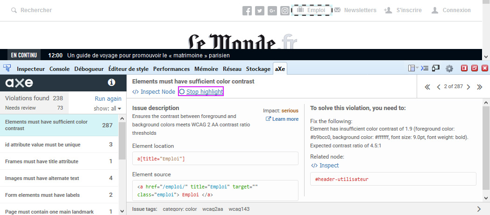
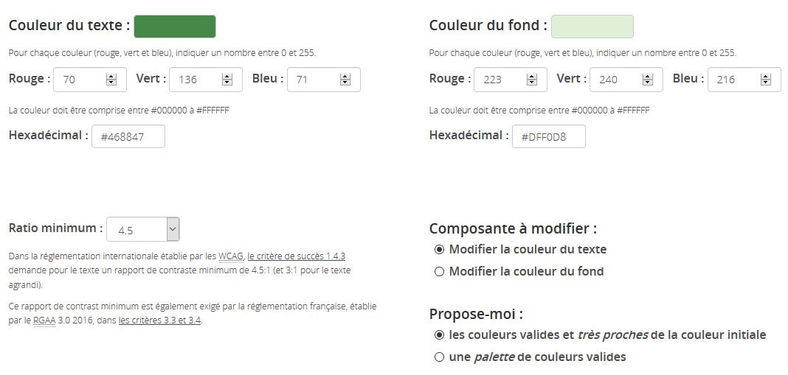
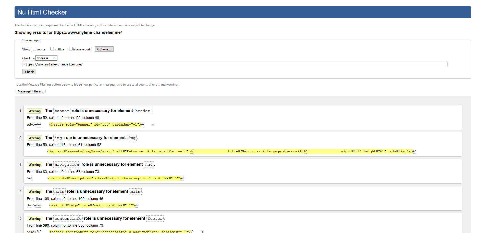
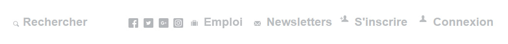
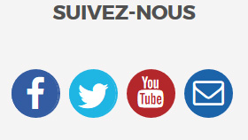

<!DOCTYPE html>
<html lang="fr">

	<head>
		<title>Gérer l’accessibilité d’un projet sans profil technique</title>
		<meta charset="utf-8">
		<link rel="stylesheet" href="css/font/small.css" type="text/css" media="screen">	
		<link rel="stylesheet" href="css/style.css" type="text/css" media="screen">
		
		<link rel="stylesheet" href="css/themes/default.css" type="text/css" media="all">
		<link rel="stylesheet" href="css/font-awesome.min.css" type="text/css" media="all">
		<link rel="stylesheet" href="css/print.css" type="text/css" media="print">
		<meta name="viewport" content="width=device-width, initial-scale=1.0">
		<script src="AccesSlide.js" nonce="2726c7f26c"></script>
		<script src="lang/lang_fr.js"></script>
		<script src="highlight/highlight.pack.js"></script>

		<link rel="apple-touch-icon" sizes="152x152" href="apple-touch-icon-152x152.png">
		<link rel="icon" type="image/png" href="favicon-32x32.png" sizes="32x32">
		<link rel="icon" type="image/png" href="android-chrome-192x192.png" sizes="192x192">
		<link rel="icon" type="image/png" href="favicon-96x96.png" sizes="96x96">
		<link rel="icon" type="image/png" href="favicon-16x16.png" sizes="16x16">
		<link rel="manifest" href="manifest.json">
		<meta name="msapplication-TileColor" content="#da532c">
		<meta name="msapplication-TileImage" content="mstile-144x144.png">
		<meta name="theme-color" content="#ffffff">
	</head>

	<body>
		<div id="screen" class="modeplan" data-effect="Eno">

			<div id="volet"></div>
			
			<header id="banner" role="banner" class="main-header clearfix">
				<a href="https://mylene-chandelier.me">
					
				</a>
				<h1 class="main-title">&ldquo;Gérer l’accessibilité d’un projet sans profil technique&rdquo;</h1>
			</header>
		
			<div id="nav" class="tool-bar footer-nav clearfix">
				<div id="wrappernav">
					<ul class="related">
						<li>
							<a href="https://twitter.com/crazycatlena" title="Retrouvez-moi sur Twitter">
								<span class="fa fa-twitter" aria-hidden="true"></span>
							</a>
						</li>
						<li>
							<a href="https://github.com/mchandelier" hreflang="en" title="Consultez mon repo Github">
								<span class="fa fa-github" aria-hidden="true"></span>
							</a>
						</li>
					</ul>
				</div>
			</div>

			<nav role="navigation" id="sommaire" class="tool-block tool-block-summary" tabindex="-1"></nav>

			<div id="wrapper">
			
				<main role="main" id="main">
		
					<section class="slide couv">
						<h2>Gérer l’accessibilité d’un projet sans profil technique</h2>
					</section>
					
					<section class="slide">
						<h2>Sommaire</h2>
						<ol>
							<li>But et mise en contexte</li>
							<li>Avant-projet, spécifications et formation</li>
							<li>Présentation des outils de test</li>
							<li>Tester soi-même</li>
							<li>Couverture des critères et restitution aux équipes</li>
							<li>Et après ?</li>
							<li>Questions.</li>
						</ol>
					</section>
					
					Alors l'accessibilité c'est un sujet riche. Il existe plusieurs normes et référentiels, il y a les WCAG comme norme internationnale, plusieurs pays comme la France ont leur propre référentiel
					il y a beaucoup de critères à respecter et ce n'est pas forcément facile de s'y retrouver.
					À partir de là, 
					Comment gérer un projet d’accessibilité web quand on est novice en la matière ? Nous allons voir l'intérêt de prendre en compte l'accessibilité dès le début du projet et non en bout de chaîne
					Comment vérifier que les critères sont bien respectés ? Plusieurs outils vont nous aider
					et enfin, comment faire des retours aux équipes ?
					
					Pour répondre à ces questions, mettons nous dans le contexte dans lequel un client demande un site accessible selon les normes en vigueur.
					
					Il n'y a pas plus de précisions. Alors par quoi commencer?
			
					Dès la phase d'avant-vente il faut anticiper. Si l'équipe n'est pas formée et qu'elle n'a pas de connaissances de l'accessibilite en particulier, il va falloir prévoir un chiffrage plus large que d'habitude. Ensuite, très important, il faut ventiler les charges sur tous les postes car tout le monde va être concerné par cette application de l'accessibilité

					
					
					
					Au niveau des spécifications, pour éviter de passer de « je veux un site accessible » à « faisons au mieux et on verra plus tard pour atteindre le niveau pour être dans la norme requise »
					il va falloir baliser le projet correctement.
					
					"Selon les normes en vigueur", si on est dans un contexte français, cela va être le RGAA( référentiel...). En faisant quelques recherches sur Internet on arrive rapidement dessus.
					
					Si on a pour habitude de rédiger un Plan d'Assurance Qualité, on va inscrire l'utilisation du RGAA dans ce plan. Le niveau requis pour respecter la norme étant le niveau AA, on va également le noter.
					
					L'accessibilité, c'est quelque chose qui s'intègre à chaque étape d'un projet et donc qui se contrôle à chaque étape d'un projet.
					
					Dans le plan d'assurance qualité, on va préciser la féquence des tests. Cela peut être après les wireframes (s'il y en a), le design, le développement front, le développement back ou bien à la fin de chaque sprint. Cela va dépendre du contexte d'organisation.
					
					Il faut préciser qui va faire les tests, si c'est vous-même, quelqu'un d'extérieur au projet ou le membre de l'équipe qui produit le livrable et comment cela va être testé.
					Est-ce-que c'est à l'aide d'outils automatiques, en parcourant le RGAA etc.
					
					SPECS TECHNIQUES ET FONCTIONNELLES
					
					
					
					Ensuite, dans le cahier des charges, on peut ajouter un paragraphe pour la prise en compte de l'accessibilite reprenant ce qui a été noté dans le PAQ.
					
					Quelque chose qui va beaucoup aider l'équipe, c'est de joindre une annexe au cahier des charges qui va reprendre les critères à respecter par chacun.
					Ce sera beaucoup plus simple pour un designer ou un développeur de savoir quels critères il doit respecter plutôt qu'il n'ait à faire le tri de l'ensemble des critères.
					Si l'équipe n'est pas formée, cela va l'aider à se concentrer sur l'essentiel.
					
					
					En parlant de formation, il y a plusieurs options possibles.
					
					Il est possible de faire je dirais plus une sensibilisation interne qu'une véritable formation, parce qu'il faut connaître un peu le sujet pour ça.
					Mais on peut présenter les critères à respecter par chacun, en utilisant l'annexe au cahier des charges. Cela va permettre aux designers et développeurs d'anticiper.
					
					Ils vont avoir le temps de creuser les critères qui les concernent et de trouver les outils qui vont les aider. Je pense à des plugins de test de contraste pour Sketch et Photoshop ou encore, 
					à des plugins JavaScripts accessibles.
					
					Il faut du temps pour faire des recherches pour tester des plugins qui répondront aux besoins du projet.
					
					On peut aussi faire des formations externes. La plupart dure 2 3 jours et ont des cibles spécifiques.
					Il en existe pour les développeurs, pour les chefs de projet pour les designers, les contrib... Il y a le choix, il faut en profiter !

					On peut choisir l'option d'un accompagnement par un expert. Dans ce cas là, il faudra définir avec lui son périmètre d'intervention. Est-ce qu'on veut qu'il teste les livrables ?
					ou plutôt est-il là pour répondre aux questions en plus de tester ?
					
					Et enfin, il faut être outillé au quotidien. Il y a, entre autres des outils que je vais vous présenter juste après et les notices Atalan.
					
					Il y en a une par métier (développeur, designer, contributeur) et elles sont très bien détaillées. Je les trouve idéales pour débuter et à utiliser en piqûre de rappel quand on a un doute sur un critère.
					
					Passons maintenant aux outils de test. Je vais vous présenter les outils suivants.
					
					<section class="slide">
						<h2>Outils de test</h2>
						<ul>
							<li><span lang="en">Wave toolbar</span></li>
							<li>aXe Core</li> 
							<li>Lighthouse de Google Chrome</li>
							<li><span lang="en">HeadingsMap</span></li>
							<li><span lang="en">Tanaguru Contrast Finder</span></li>
							<li>Validateur w3C</li>
						</ul>
					</section>
					
					
					Tout d'abord la Wave Toolbar. 
					
					<section class="slide">
						<h2><span lang="en">Wave toolbar</span></h2>
						<div class="col-left">
							Met en surbrillance différentes informations comme les erreurs, les avertissements, les éléments ARIA utilisés, les niveaux de titres.
						</div>
						<div class="col-left">
							
						</div>

					</section>
					
					<section class="slide">
						<h2><span lang="en">Wave toolbar</span></h2>
						<p>
							Chaque information possède un lien avec des détails.
						</p>
						<br/>
						
						
					</section>
					
					<section class="slide">
						<h2><span lang="en">Wave toolbar</span></h2>
						<div class="col-left">
							Un panneau contenant des informations détaillées sur chaque point relevé est disponible et permet d’avoir de la documentation. 
						</div>
						<div class="col-left">
							
						</div>
					</section>

					<section class="slide">
						<h2>aXe Core</h2>
						<p>
							Outil très populaire (plus d’1 million de téléchargements). Il se base sur le référentiels <abbr title="Web Content Accessibility Guidelines" lang="en">WCAG</abbr>, la section 508 et donne des bonnes pratiques de code (role="main" sur balise main uniquement, titre de niveau 1 présent dans la page)
						</p>
						<br/>
						
						
					</section>
					
					<section class="slide">
						<h2><span lang="en">Lighthouse</span> de Google Chrome</h2>
						<p>
							Scanne la page pour donner un score d’accessibilité, le performance, de SEO et de <span lang="en">progressive web app</span>.
						</p>
						<br/>
						
					</section>
					<section class="slide">
						<h2><span lang="en">Lighthouse</span> de Google Chrome</h2>
						<p>
							Le volet accessibilité liste les erreurs et comment les corriger. Il indique aussi les tests pouvant être fait manuellement, les tests réussis et ceux non applicables.
						</p>
						<br/>
						
					</section>

					<section class="slide">
						<h2><span lang="en">HeadingsMap</span></h2>
						<p class="col-left">
							Liste tous les titres présents dans la page. Cela permet de voir d’un coup d’oeil si la hiérarchie h1, h2, h3, h4... est respectée au non.
						</p>
						<div class="col-left">
							
						</div>
					</section>

					<section class="slide">
						<h2><span lang="en">Tanaguru Contrast Finder</span></h2>
						<p>
							Ce site permet de tester le ratio de contraste entre le texte et la couleur de fond et propose une palette de couleurs valides si le test initial n’est pas conforme.
						</p>
						<br/>
						
					</section>
					<section class="slide">
						<h2><span lang="en">Tanaguru Contrast Finder</span></h2>
						<p>La combinason de couleur initiale est invalide. Une palette conforme est proposée.</p>
						<br/>
							
					</section>
					<section class="slide">
						<h2><span lang="en">Validateur w3C</span></h2>
						<p>
							Valider le code HTML est un critère à respecter car cela peut éviter une mauvaise restitution du contenu par les lecteurs d’écran si la structure n’est pas conforme.
						</p>
						<br/>
						
					</section>
					
					Pour compléter les tests automatiques, on peut faire quelques tests manuels assez rapides.

					<section class="slide">
						<h2>Tester soi-même</h2>
						<ul>
							<li>Titre de la page</li>
							<li>Navigation clavier</li> 
							<li>Zoom de la page</li>
							<li>Supprimer le CSS</li>
							<li>Tester avec un lecteur d’écran</li>
						</ul>
					</section>

					<section class="slide">
						<h2>Tester le titre de la page</h2>
						<ul>
							<li>Titre de la page - Nom du site</li>
							<li>Erreur sur un formulaire, est-ce-que le titre est mis à jour ?</li>
							<li>Changement des filtres de recherche sur un formulaire, est-ce-que le titre est mis à jour ?</li>
						</ul>
					</section>

					<section class="slide">
						<h2>Tester la navigation au clavier</h2>
						<ul>
							<li>Première tabulation = Lien d’évitement</li>
							<li>Ordre de navigation dans le sens de la lecture</li>
							<li>Focus visible sur les éléments interactifs (couleur de fond ou bordure en CSS)</li>
						</ul>
					</section>

					<section class="slide">
						<h2>Tester le zoom texte</h2>
						<ul>
							<li>Affichage > Zoom > Zoom texte seulement dans Firefox</li>
							<li>Zoomer jusqu’à 200% (appuyer 6 fois sur ctrl + +)</li>
							<li>Si texte masqué ou se superpose, le critère est invalidé</li>
						</ul>
						<br/>
						<p>
							Zoom invalide (height fixe dans le CSS)
							
						</p>
						<br/>
						<p>
							Zoom valide (min-height dans le CSS)
							
						</p>
					</section>

					<section class="slide">
						<h2>Supprimer le CSS</h2>
						<p>
							Avec <span lang="en">Wave Toolbar</span> par exemple.
							Le contenu doit rester compréhensible et visible.
						</p>
						<p class="col-left">
							Liens de réseaux sociaux avec des icônes
						</p>
						<div class="col-left">
							
						</div>
	
						<p class="col-left">
							Le texte des liens apparaît lorsque CSS est désactivé
						</p>
						<div class="col-left">
							
						</div>
					</section>

					<section class="slide">
						<h2>Tester avec un lecteur d’écran</h2>
						<p>
							Avec <abbr title="Non Visual Desktop Access">NVDA</abbr> ou Jaws sur Windows ou VoiceOver sur Mac (natif).<br/>
							Permet de juger de la compréhension des contenus et de la pertinence des alternatives textuelles.
						</p>
					</section>
				
					Le RGAA prévoit ce qui s'appelle une base de référence. C'est la combinaison lecteur d'écran/navigateur pour tester la restitution.
					
					La base de référence est 
					NVDA ou Jaws et Firefox sur Windows ;
					NVDA ou JAWS et Internet Explorer9+ sur Windows ;
					VoiceOver et Safari sur macOS
					
					

					<section class="slide">
						<h2>Couverture des critères et restitution aux équipes</h2>
						<p>
							En répartissant les tests entre chaque pôle, chacun doit s'être assuré de respecter tous les critères qui le concerne.
						</p>
						<p>
							Pour vérifier rapidement : Test aXe + tests manuels.<br/>
							Si vous aver plus de temps : Test lecteur d'écran, parcourir le référentiel au maximum.
						</p>
						<p>
							Prioriser les bugs selon l'impact utilisateur, la répétition dans les pages. Faire un ticket par non-conformité le plus détaillé possible (copie écran, lien vers référentiel d'accessibilité)
						</p>
					</section>

					<section class="slide noprint">						
						<h2>Et après ?</h2>
						<ul>
							<li class="Cmasque">
								Maintenir le niveau de conformité après la mise en ligne en formant les contributeurs et en vérifiant l'accessiblité des futurs développements.
							</li>
							<li class="Cmasque">
								Faire faire un audit pour confirmer le niveau de conformité. Plusieurs avantages :
								<ul>
									<li class="Cmasque">Vous aide si vous n'êtes pas sûrs d'avoir bien respecté un critère (ex. les scripts)</li>
									<li class="Cmasque">Montée en compétence de toute l'équipe grâce aux suggestions de l'expert</li>
									<li class="Cmasque">Meilleure qualité du projet et capitalisation sur les prochains</li>
									<li class="Cmasque">Satisfaction du travail bien fait</li>
									<li class="Cmasque">Labellisation ?</li>
								</ul>
							</li>
						</ul>
					</section>	
					
					<section class="slide noprint">						
						<h2>Conclusion</h2>
						<ul>
							<li class="Cmasque">
								L’accessibilité doit être prise en compte dès le début comme le SEO ou la performance, ce n'est pas un bonus dans un projet
							</li>
							<li class="Cmasque">
								Faire de l'accessibilité à posteriori est coûteux et complexe. Pensée en amont, l'équipe peut anticiper sur de la recherche technique ou d'outils
							</li>
							<li class="Cmasque">
								Les tests automatiques valident environ 30% des critères. Validation manuelle pour les critères de pertinence par exemple
							</li>
							<li class="Cmasque">
								Impliquez votre équipe dans une démarche de mise en conformité d'accessibilité
								<ul>
									<li class="Cmasque">Gain de temps si chacun est reponsable de l'accessibilité de ses livrables</li>
									<li class="Cmasque">Montée en compétence de toute l'équipe</li>
									<li class="Cmasque">Capitalisation sur d'autres projets même sans accessibilité. Il y a plein de critères simples à intégrer</li>
									<li class="Cmasque">Vocations d'experts ? ;)</li>
								</ul>
							</li>
						</ul>
					</section>	
					
					<section class="slide end">
						<h2>Merci, des questions?</h2>
						<p class="center">
							
						</p>
					</section>
				</main>		
			</div>

			<div id="setting" class="tool-block tool-block-settings hide" role="dialog" tabindex="-1"></div>	
		</div>

		<div id="Caudio"></div>
		<div id="Dcourante" aria-live="polite" aria-atomic="true" aria-hidden="true"></div>

		<script src="slide.js"></script>
		<script src="ean.js"></script>

	</body>
</html>
